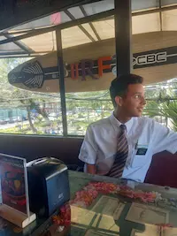

Johann Vasquez | WDD 130
Hi! My name is Johann Vasquez, and I'm from Panama City, Panama. I have a deep passion for computers and programming, especially exploring new technologies and solving complex problems through code. I’m currently studying software development at BYU, and I’m constantly amazed by how much there is to learn and the endless possibilities technology offers. I'm particularly excited about web development and understanding how web pages function behind the scenes. I want to master building dynamic, user-friendly applications. Beyond coding, I enjoy collaborating on projects, learning from others, and staying updated with the latest industry trends. My goal is to become a well-rounded developer, contribute to meaningful projects, and maybe even launch my own startup one day. The tech field is always evolving, and I love the challenge of keeping up with new advancements. Whether it's debugging code, designing interfaces, or optimizing performance, I find every aspect of development fascinating. I can't wait to see where this journey takes me and the impact I can make in the digital world!